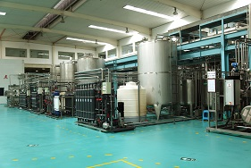
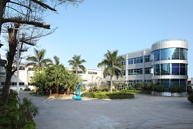
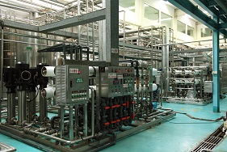

工厂和基地
Factories and bases
公司现有汕头工厂、深圳工厂和婺源工厂三处生产与加工基地；在杭州，深宝与中国农科院茶叶研究所合作建立了研发中心，提供技术保障。同时在江西拥有无公害和有机茶园。
At present, Business Division has three production and processing bases, respectively in Shantou, Shenzhen and Wuyuan. In Hangzhou，the company has built an R&D center with the cooperation of the Tea Research Institute of the Chinese Academy of Agricultural Sciences to provide technical support. Moreover, Business Division has pollution-free and organic tea gardens in Jiangxi Province.
汕头工厂：设立在中国传统乌龙茶文化的发源地之一——汕头，1993年建成投产，2008年进行了二期扩建。目前拥有多条国内领先水平的茶叶及天然植物速溶粉生产线。
Shantou Factory: Shantou is the cradle of the traditional Chinese oolong tea culture. The factory was founded and commissioned in 1993 and completed second-stage development in 2008. It presently operates several major production lines producing tea & botanical extracts.
深圳工厂：设立在中国改革开放的前沿阵地、高科技企业的摇篮——深圳，2004年建成投产。2007年进行了二期扩建。拥有多条达到国际先进水平的茶叶及天然植物速溶粉、浓缩汁生产线。
Shenzhen Factory: The Shenzhen factory is located in Shenzhen, pioneer of China’s reform and cradle of .high-tech enterprises. It was launched in 2004 and the second phase construction was done in 2007.The Shenzhen factory has a number of tea & botanical extracts production lines that approach international levels.
婺源工厂：设立在中国主要的绿茶产地，被誉为“中国最美的乡村--江西婺源”，2008年建成投产。拥有多条茶叶加工生产线、饮料用茶叶生产线。2013年，二期工程投产，主要生产茶、植物深加工产品。
Wuyuan Factory: Established in Wuyuan, Jiangxi Province, the factory was completed and operating in 2008. The production lines are capable of tea processing and beverage tea producing.
江西茶叶种植基地：设立在中国主要的绿茶产地——江西婺源，2007年收购并整合完成。由多块立体生态茶园、有机转换茶园、有机茶园组成。
Jiangxi Tea Plantation: Built in Wuyuan, Jiangxi Province, the green tea plantation was purchased and merged in 2007, now consisting of several three-dimensional ecological tea gardens, organic transformation tea gardens and organic tea gardens.
云南茶叶供应基地：在中国主要的红茶产地——云南临沧，多家大型红茶企业供应事业部红茶原料，并具有完善的追溯体系，原料基地由多块无公害茶园、高山茶园组成。
Yunnan Tea Supply Base：Set up in Lincang, Yunnan Province, the main black tea origin. Many large-scale black tea enterprises supply Business Division with black tea raw materials, which possess the perfect traceability system. Raw Material Base is consisting of several pollution-free tea gardens and highland tea gardens.